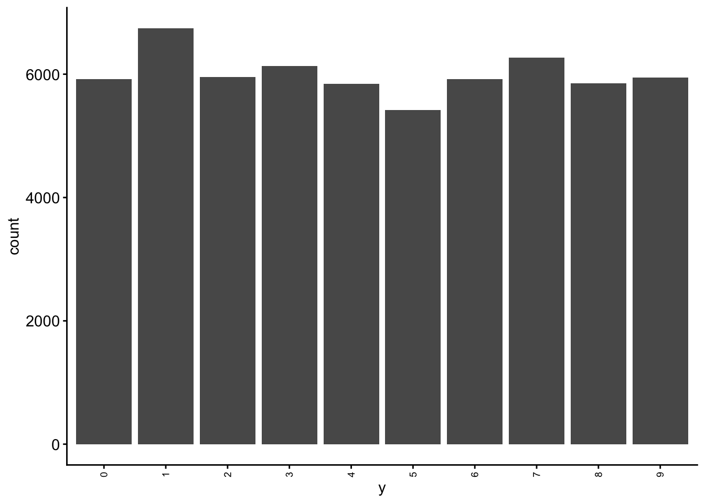
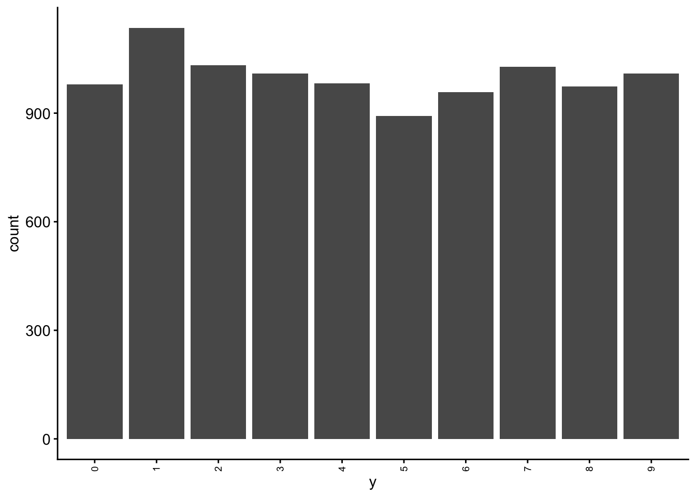
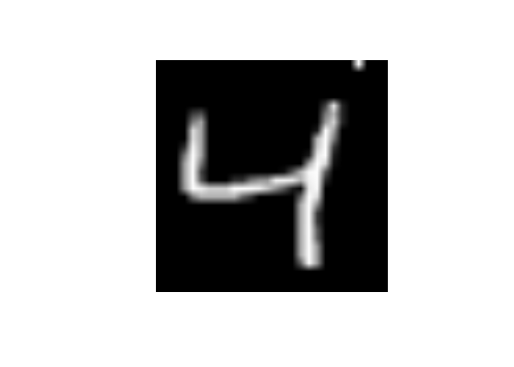

Code
library(keras, exclude = "get_weights")
library(magrittr, exclude = c("set_names", "extract"))We will be using the keras engine to fit our neural networks in R.
The keras package provides an R Interface to the Keras API in Python.
From the website:
Keras is a high-level neural networks API developed with a focus on enabling fast experimentation. Being able to go from idea to result with the least possible delay is key to doing good research.
Keras has the following key features:
Keras is actually a wrapper around an even more extensive open source platform, TensorFlow, which has also been ported to the R environment
TensorFlow is an end-to-end open source platform for machine learning. It has a comprehensive, flexible ecosystem of tools, libraries and community resources that lets researchers push the state-of-the-art in ML and developers easily build and deploy ML powered applications.
TensorFlow was originally developed by researchers and engineers working on the Google Brain Team within Google’s Machine Intelligence research organization for the purposes of conducting machine learning and deep neural networks research
If you are serious about focusing primarily or exclusively on neural networks, you will probably work directly within Keras in R or Python. However, tidymodels gives us access to 3 layer (single hidden layer) MLP neural networks through the keras engine. This allows us to fit simple (but still powerful) neural networks using all the tools (and code/syntax) that you already know. Yay!
If you plan to use Keras directly in R, you might start with this book. I’ve actually found it useful even in thinking about how to interface with Keras through tidymodels.
Getting tidymodels configured to use the keras engine can take a little bit of upfront effort.
We provide an appendix to guide you through this process
If you havent already set this up, please do so immediately so that you can reach out to us for support if you need it
Once you have completed this one-time installation, you can now use the keras engine through tidymodels like any other engine. No need to do anything different from your normal tidymodeling workflow.
You should also know that Keras is configured to use GPUs rather than CPU (GPUs allow for highly parallel fitting of neural networks).
Now lets start fresh
library(keras, exclude = "get_weights")
library(magrittr, exclude = c("set_names", "extract"))The MNIST database (Modified National Institute of Standards and Technology database) is a large database of handwritten digits that is commonly used for training and testing in the field of machine learning.
It consists of two sets:
Each observation in the datasets represent a single image and its label
Let’s start by reading train and test sets
data_trn <- read_csv(here::here(path_data, "mnist_train.csv.gz"),
col_types = cols()) |>
mutate(y = factor(y, levels = 0:9, labels = 0:9))
data_trn |> dim()[1] 60000 785data_test <- read_csv(here::here(path_data, "mnist_test.csv"),
col_types = cols()) |>
mutate(y = factor(y, levels = 0:9, labels = 0:9))
data_test |> dim()[1] 10000 785Here is some very basic info on the outcome distribution
data_trn |> tab(y)# A tibble: 10 × 3
y n prop
<fct> <int> <dbl>
1 0 5923 0.0987
2 1 6742 0.112
3 2 5958 0.0993
4 3 6131 0.102
5 4 5842 0.0974
6 5 5421 0.0904
7 6 5918 0.0986
8 7 6265 0.104
9 8 5851 0.0975
10 9 5949 0.0992data_trn |> plot_bar("y")
data_test|> tab(y)# A tibble: 10 × 3
y n prop
<fct> <int> <dbl>
1 0 980 0.098
2 1 1135 0.114
3 2 1032 0.103
4 3 1010 0.101
5 4 982 0.0982
6 5 892 0.0892
7 6 958 0.0958
8 7 1028 0.103
9 8 974 0.0974
10 9 1009 0.101 data_test |> plot_bar("y")
Let’s look at some of the images. We will need a function to display these images. We will use as.cimg() from the imager package
display_image <- function(data){
message("Displaying: ", data$y)
data |>
select(-y) |>
unlist(use.names = FALSE) |>
imager::as.cimg(x = 28, y = 28) |>
plot(axes = FALSE)
}Observations 1, 3, 10, and 100 in training set
data_trn |>
slice(1) |>
display_image()Displaying: 5data_trn |>
slice(3) |>
display_image()Displaying: 4data_trn |>
slice(10) |>
display_image()Displaying: 4data_trn |>
slice(100) |>
display_image()Displaying: 1And here is the first observation in test set
data_test |>
slice(1) |>
display_image()Displaying: 7Let’s understand the individual predictors a bit more
What will happen to the image if I change the value of predictor x25 to 255
data_trn |>
slice(3) |>
display_image()Displaying: 4x25 to 255data_trn |>
slice(3) |>
mutate(x25 = 255) |>
display_image()Displaying: 4
What will happen to the image if I change the value of predictor x29 to 255
x29 to 255data_trn |>
slice(3) |>
mutate(x29 = 255) |>
display_image()Displaying: 4What will happen to the image if I change the value of predictor x784 to 255
x784 to 255data_trn |>
slice(3) |>
mutate(x784 = 255) |>
display_image()Displaying: 4Let’s train some models to understand some basics about neural networks and the use of Keras within tidymodels
We will fit some configurations in the full training set and evaluate their performance in test
We are NOT using test to select among configurations (it wouldn’t be a true test set then) but only for instructional purposes.
We will start with an absolute minimal recipe and mostly defaults for the statistical algorithm
We will build up to more complex (and better) configurations
We will end with a demonstration of the use of the single validation set approach to select among model configurations
Let’s start with a minimal recipe
rec_min <-
recipe(y ~ ., data = data_trn)Here are feature matrices for train and test using this recipe
rec_min_prep <- rec_min |>
prep(data_trn)
feat_trn <- rec_min_prep |>
bake(NULL)
feat_test <-rec_min_prep |>
bake(data_test)And let’s use a mostly out of the box (defaults) 3 layer (1 hidden layer) using Keras engine
Defaults:
The default activation for the hidden units when using Keras through tidymodels is softmax not sigmoid as per the basic models discussed in the book and lectures.
softmax for classification problems when using Keras through tidymodels
linear, softmax, relu, and elu through tidymodelsWe will adjust seeds from the start
There are a number of points in the fitting process where random numbers needed by Keras
dropouttidymodels lets us provide three seeds to make the first two bullet points more reproducible.
There seems to still be some randomness across runs due to batch selection (and possibly other opaque steps)
set.seed(1234567)
fit_seeds <- sample.int(10^5, size = 3) # c(87591, 536, 27860)We will also set verbose = 0 for now
Let’s fit this first model configuration in training set
verbose = 0seeds = fit_seedsfit_1 <-
mlp() |>
set_mode("classification") |>
set_engine("keras",
verbose = 0,
seeds = fit_seeds) |>
fit(y ~ ., data = feat_trn)NOTE: The first model fit with Keras in each new session will generate those warnings/errors about GPU. You can ignore them.
Here is this model’s performance in test
It’s not that great (What would you expect by chance?)
accuracy_vec(feat_test$y, predict(fit_1, feat_test)$.pred_class)313/313 - 0s - 414ms/epoch - 1ms/step[1] 0.2104Theoretically, the scale of the inputs should not matter
HOWEVER, gradient descent works better with inputs on the same scale
We will also want inputs with the same variance if we later apply L2 regularization to our models
We could:
step_normalize() [Bad choice of function names by tidymodel folks; standardize vs. normalize]step_range()/ 255)We will use step_normalize()
rec_scaled_wrong <-
recipe(y ~ ., data = data_trn) |>
step_normalize(all_predictors())This is wrong! Luckily we glimpsed our feature matrix (not displayed here)
Many of the features have zero variance b/c they are black for ALL of the images (e.g., top rows of pixels. We can not scale a predictor with zero variance b/c when we divide by the SD = 0, we get NaN). At a minimum, we should remove zero variance predictors in training from training and test
For example
data_trn$x1 |> sd()[1] 0Let’s remove zero variance predictors before we scale
rec_scaled <-
recipe(y ~ ., data = data_trn) |>
step_zv(all_predictors()) |>
step_normalize(all_predictors())We now have 717 (+ y) features rather than 28 * 28 = 784 features
rec_scaled_prep <- rec_scaled |>
prep(data_trn)
feat_trn <- rec_scaled_prep |>
bake(NULL)
dim(feat_trn)[1] 60000 718Let’s also make the feature matrix for test. This will exclude features that were zero variance in train and scale them by their mean and sd in train
feat_test <- rec_scaled_prep |>
bake(data_test)
dim(feat_test)[1] 10000 718Let’s fit and evaluate this new feature set with no other changes to the model configuration
fit_2 <-
mlp() |>
set_mode("classification") |>
set_engine("keras", verbose = 0, seeds = fit_seeds) |>
fit(y ~ ., data = feat_trn)accuracy_vec(feat_test$y, predict(fit_2, feat_test)$.pred_class)313/313 - 0s - 258ms/epoch - 825us/step[1] 0.4977There are many other recommendations about feature engineering to improve the inputs
These include:
step_BoxCox(), step_YeoJohnson())step_pca() but retain all features?)You can see some discussion of these issues here and here to get you started. The paper linked in the stack overflow response is also a useful starting point.
Some preliminary modeling EDA on my part suggested these additional considerations didn’t have major impact on the performance of our models with this dataset so we will stick with just scaling the features.
It is not surprising that a model configuration with only one hidden layer and 5 units isn’t sufficient for this complex task
Let’s try 30 units (cheating based on the book chapter!! ;-)
fit_5units <- mlp(hidden_units = 30) |>
set_mode("classification") |>
set_engine("keras", verbose = 0, seeds = fit_seeds) |>
fit(y ~ ., data = feat_trn)accuracy_vec(feat_test$y, predict(fit_5units, feat_test)$.pred_class)313/313 - 0s - 300ms/epoch - 960us/step[1] 0.9413The Three Blue 1 Brown videos had a brief discussion of the relu activation function.
Let’s see how to use other activation functions and if this one helps.
fit_relu <- mlp(hidden_units = 30, activation = "relu") |>
set_mode("classification") |>
set_engine("keras", verbose = 0, seeds = fit_seeds) |>
fit(y ~ ., data = feat_trn)accuracy_vec(feat_test$y, predict(fit_relu, feat_test)$.pred_class)313/313 - 0s - 309ms/epoch - 989us/step[1] 0.9642As you might imagine, given the number of weights to be fit in even a modest neural network (our 30 hidden unit network has 21,850 parameters to estimate), it is easy to become overfit
fit_reluparsnip model object
Model: "sequential_3"
________________________________________________________________________________
Layer (type) Output Shape Param #
================================================================================
dense_6 (Dense) (None, 30) 21540
dense_7 (Dense) (None, 10) 310
================================================================================
Total params: 21850 (85.35 KB)
Trainable params: 21850 (85.35 KB)
Non-trainable params: 0 (0.00 Byte)
________________________________________________________________________________This will be an even bigger problem if you aren’t using “big” data
There are a number of different methods available to reduce potential overfitting
L2 regularization is implemented in essentially the same fashion as you have seen it previously (e.g., glmnet)
The cost function is expanded to include a penalty based on the sum of the squared weights multiplied by \(\lambda\).
In the tidymodels implementation of Keras:
\(\lambda\) is called penalty and is set and/or (ideally) tuned via the penalty argument in mlp()
Common values for the L2 penalty to tune a neural network are often on a logarithmic scale between 0 and 0.1, such as 0.1, 0.001, 0.0001, etc.
penalty = 0 (the default) means no L2 regularization
Keras implements other penalties (L1, and a mixture) but not currently through tidymodels
Here is a starting point for more reading on regularization in neural networks
Let’s set penalty = .0001.
fit_penalty <- mlp(hidden_units = 30, activation = "relu", penalty = .0001) |>
set_mode("classification") |>
set_engine("keras", verbose = 0, seeds = fit_seeds) |>
fit(y ~ ., data = feat_trn)accuracy_vec(feat_test$y, predict(fit_penalty, feat_test)$.pred_class)313/313 - 0s - 274ms/epoch - 875us/step[1] 0.9659Dropout is a second technique to minimize overfitting.
Here is a clear description of dropout from a blog post on the Machine Learning Mastery:
Dropout is a technique where randomly selected neurons are ignored during training. They are “dropped-out” randomly. This means that their contribution to the activation of downstream neurons is temporally removed on the forward pass and any weight updates are not applied to the neuron on the backward pass.
As a neural network learns, neuron weights settle into their context within the network. Weights of neurons are tuned for specific features providing some specialization. Neighboring neurons come to rely on this specialization, which if taken too far can result in a fragile model too specialized to the training data.
You can imagine that if neurons are randomly dropped out of the network during training, that other neurons will have to step in and handle the representation required to make predictions for the missing neurons. This is believed to result in multiple independent internal representations being learned by the network.
The effect is that the network becomes less sensitive to the specific weights of neurons. This in turn results in a network that is capable of better generalization and is less likely to overfit the training data.
For further reading, you might start with the 2014 paper by Srivastava, et al that proposed the technique.
In tidymodels, you can set or tune the amount of dropout via the dropout argument in mlp()
droppout = 0 (the default) means no dropoutpenalty or dropout but not bothLet’s try dropout = .1.
fit_dropout <- mlp(hidden_units = 30, activation = "relu", dropout = .1) |>
set_mode("classification") |>
set_engine("keras", verbose = 0, seeds = fit_seeds) |>
fit(y ~ ., data = feat_trn)accuracy_vec(feat_test$y, predict(fit_dropout, feat_test)$.pred_class)313/313 - 0s - 315ms/epoch - 1ms/step[1] 0.965Now that we have a model that is working well, lets return to the issue of number of epochs
epochs = 20 is a reasonable starting point for a network with one hidden layer but may not work for all situationsMonitoring training error (loss, accuracy) is not ideal b/c it will tend to always decrease
verbose = 1Validation error is what you need to monitor
validation_split = 1/6set_engine()epochs = 50 to review the plotepochsLet’s see this in action in the best model configuration without regularization or dropout
NOTE:
epochs = 50verbose = 1metrics = c("accuracy")validation_split = 1/6epochval_accuracy had plateau and val_loss had started to creep up by 10 epochs.fit_epochs50 <- mlp(hidden_units = 30, activation = "relu", epochs = 50) |>
set_mode("classification") |>
set_engine("keras", verbose = 1, seeds = fit_seeds,
metrics = c("accuracy"),
validation_split = 1/6) |>
fit(y ~ ., data = feat_trn)In some instances, it may be that we want to do more than simply look at epoch performance plots during modeling EDA
We can instead set the number of epochs to be high but use an early stopping callback to end the training early at an optimal time
Callbacks allow us to interrupt training.
callback_early_stopping()set_engine() using callbacks =callback_early_stopping()validation_split = 1/6This fit stopped at 15 epochs
callback_list <- list(keras::callback_early_stopping(monitor = "val_loss",
min_delta = 0,
patience = 10))fit_early <- mlp(hidden_units = 30, activation = "relu", epochs = 200) |>
set_mode("classification") |>
set_engine("keras", verbose = 1,
seeds = fit_seeds,
metrics = c("accuracy" ),
validation_split = 1/6,
callbacks = callback_list) |>
fit(y ~ ., data = feat_trn)accuracy_vec(feat_test$y, predict(fit_early, feat_test)$.pred_class)313/313 - 0s - 302ms/epoch - 964us/step[1] 0.9629Coding sidebar: You can see many of the optional arguments you can set for Keras in the help here.
And you can see more info about callback_early_stopping() here
Developing a good network artchitecture and considering feature enginnering options involves experimentation
fit_resamples() or tune_grid()tune_grid() helps with this tooHere is an example where we can select among many model configurations that differ across multiple network characteristics
Its really just our normal workflow at this point
set.seed(102030)
splits_validation <-
data_trn |>
validation_split(prop = 5/6)Warning: `validation_split()` was deprecated in rsample 1.2.0.
ℹ Please use `initial_validation_split()` instead.grid_keras <- expand_grid(hidden_units = c(5, 10, 20, 30, 50, 100),
penalty = c(.00001, .0001, .01, .1))tune_grid() to fit models in training and predict into validation set for each combination of hyperparameter valuesfits_nn <- cache_rds(
expr = {
mlp(hidden_units = tune(), penalty = tune(), activation = "relu") |>
set_mode("classification") |>
# setting to verbose = 1 to track progress. Training error not that useful
set_engine("keras", verbose = 1, seeds = fit_seeds) |>
tune_grid(preprocessor = rec_scaled,
grid = grid_keras,
resamples = splits_validation,
metrics = metric_set(accuracy))
},
rerun = rerun_setting,
dir = "cache/010/",
file = "fits_nn")show_best(fits_nn)Warning in show_best(fits_nn): No value of `metric` was given; "accuracy" will
be used.# A tibble: 5 × 8
hidden_units penalty .metric .estimator mean n std_err
<dbl> <dbl> <chr> <chr> <dbl> <int> <dbl>
1 100 0.00001 accuracy multiclass 0.973 1 NA
2 100 0.0001 accuracy multiclass 0.970 1 NA
3 50 0.0001 accuracy multiclass 0.967 1 NA
4 50 0.00001 accuracy multiclass 0.966 1 NA
5 30 0.00001 accuracy multiclass 0.962 1 NA
.config
<chr>
1 Preprocessor1_Model21
2 Preprocessor1_Model22
3 Preprocessor1_Model18
4 Preprocessor1_Model17
5 Preprocessor1_Model13We can get a better sense of how tidymodels is interacting with Keras by looking at the function that is called
mlp(hidden_units = 30, activation = "relu", dropout = .1) |>
set_mode("classification") |>
set_engine("keras", verbose = 0, seeds = fit_seeds) |>
translate()Single Layer Neural Network Model Specification (classification)
Main Arguments:
hidden_units = 30
dropout = 0.1
activation = relu
Engine-Specific Arguments:
verbose = 0
seeds = fit_seeds
Computational engine: keras
Model fit template:
parsnip::keras_mlp(x = missing_arg(), y = missing_arg(), hidden_units = 30,
dropout = 0.1, activation = "relu", verbose = 0, seeds = fit_seeds)keras_mlp() is a wrapper around the calls to Keras. Lets see what it does
keras_mlpfunction (x, y, hidden_units = 5, penalty = 0, dropout = 0, epochs = 20,
activation = "softmax", seeds = sample.int(10^5, size = 3),
...)
{
act_funs <- c("linear", "softmax", "relu", "elu")
rlang::arg_match(activation, act_funs, )
if (penalty > 0 & dropout > 0) {
rlang::abort("Please use either dropoput or weight decay.",
call. = FALSE)
}
if (!is.matrix(x)) {
x <- as.matrix(x)
}
if (is.character(y)) {
y <- as.factor(y)
}
factor_y <- is.factor(y)
if (factor_y) {
y <- class2ind(y)
}
else {
if (isTRUE(ncol(y) > 1)) {
y <- as.matrix(y)
}
else {
y <- matrix(y, ncol = 1)
}
}
model <- keras::keras_model_sequential()
if (penalty > 0) {
model %>% keras::layer_dense(units = hidden_units, activation = activation,
input_shape = ncol(x), kernel_regularizer = keras::regularizer_l2(penalty),
kernel_initializer = keras::initializer_glorot_uniform(seed = seeds[1]))
}
else {
model %>% keras::layer_dense(units = hidden_units, activation = activation,
input_shape = ncol(x), kernel_initializer = keras::initializer_glorot_uniform(seed = seeds[1]))
}
if (dropout > 0) {
model %>% keras::layer_dense(units = hidden_units, activation = activation,
input_shape = ncol(x), kernel_initializer = keras::initializer_glorot_uniform(seed = seeds[1])) %>%
keras::layer_dropout(rate = dropout, seed = seeds[2])
}
if (factor_y) {
model <- model %>% keras::layer_dense(units = ncol(y),
activation = "softmax", kernel_initializer = keras::initializer_glorot_uniform(seed = seeds[3]))
}
else {
model <- model %>% keras::layer_dense(units = ncol(y),
activation = "linear", kernel_initializer = keras::initializer_glorot_uniform(seed = seeds[3]))
}
arg_values <- parse_keras_args(...)
compile_call <- expr(keras::compile(object = model))
if (!any(names(arg_values$compile) == "loss")) {
if (factor_y) {
compile_call$loss <- "binary_crossentropy"
}
else {
compile_call$loss <- "mse"
}
}
if (!any(names(arg_values$compile) == "optimizer")) {
compile_call$optimizer <- "adam"
}
compile_call <- rlang::call_modify(compile_call, !!!arg_values$compile)
model <- eval_tidy(compile_call)
fit_call <- expr(keras::fit(object = model))
fit_call$x <- quote(x)
fit_call$y <- quote(y)
fit_call$epochs <- epochs
fit_call <- rlang::call_modify(fit_call, !!!arg_values$fit)
history <- eval_tidy(fit_call)
model$y_names <- colnames(y)
model
}
<bytecode: 0x621377c01f48>
<environment: namespace:parsnip>We can see:
Finally, you might have noticed that we never set a learning rate anywhere
The Adam optimizer is used instead of classic stochastic gradient descent. The authors of this optimizer state it is:
You can start additional reading about Adam here
For now, if you want another optimizer or much more control over your network architecture, you may need to work directly in Keras.